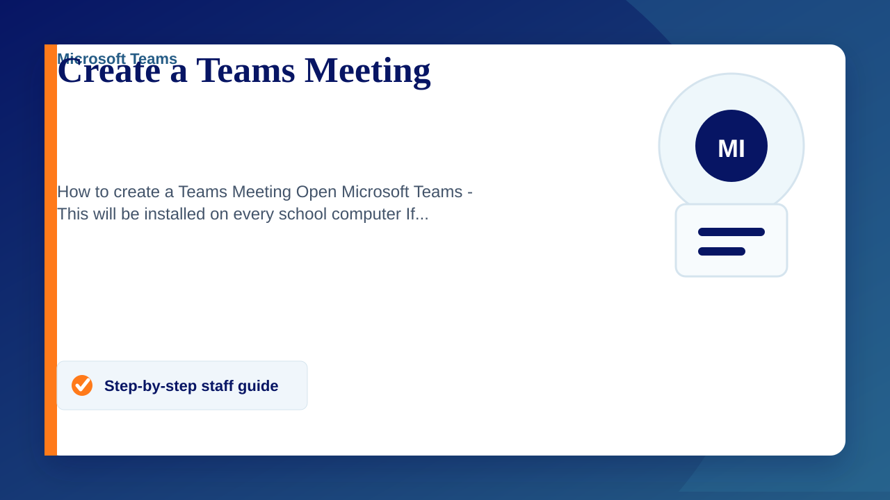

How to create a Teams Meeting
- Open Microsoft Teams - This will be installed on every school computer
If you are working from a personal device you can downlaod the teams apllication or use the online version found here - Navigate to Calendar, found on the left sidebar
- Click "New Meeting" in the top right corner
- Add a meeting title, date & time and add attendees
Attendees can be left blank if the meeting will be shared manually - Click save in the top right
- Open the scheduled meeting from your calendar and click on "Meeting Options" or "Copy Join Info" to get the link.
- Paste the link into an email or message and send.